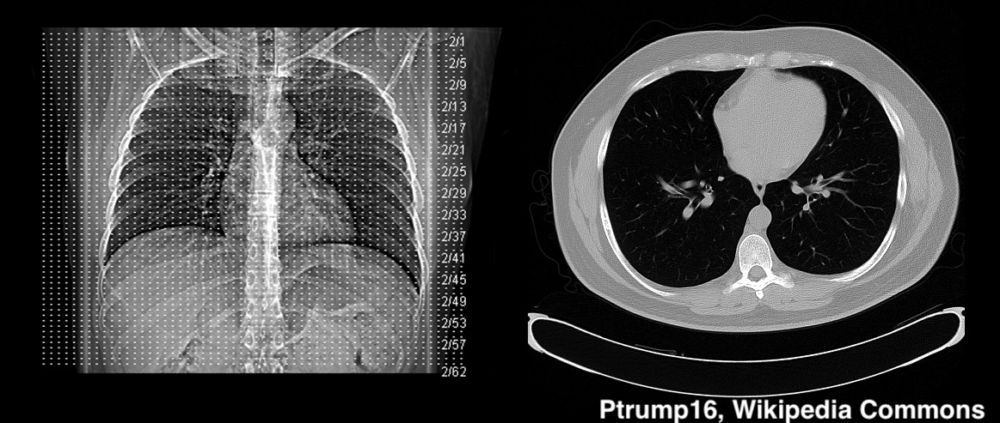
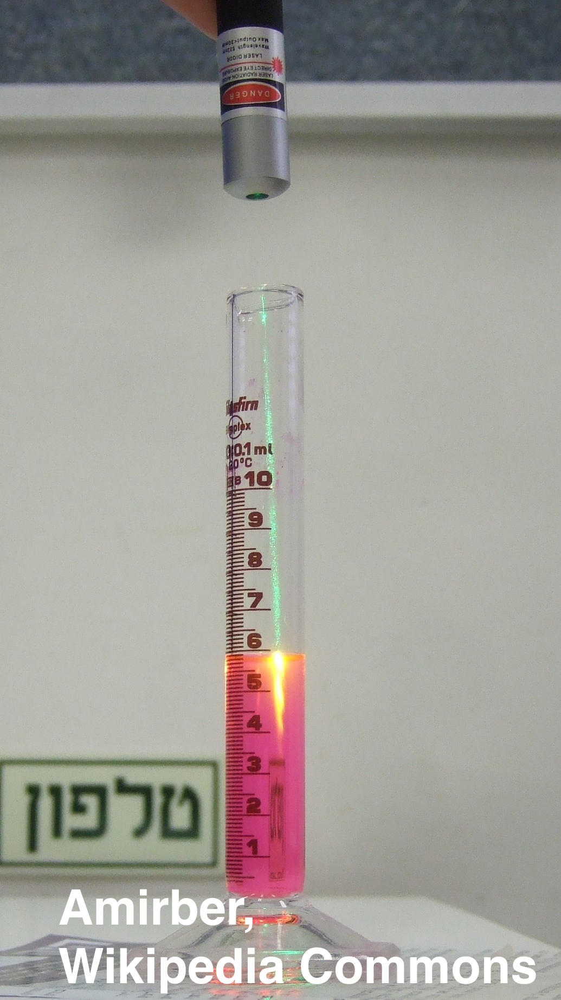
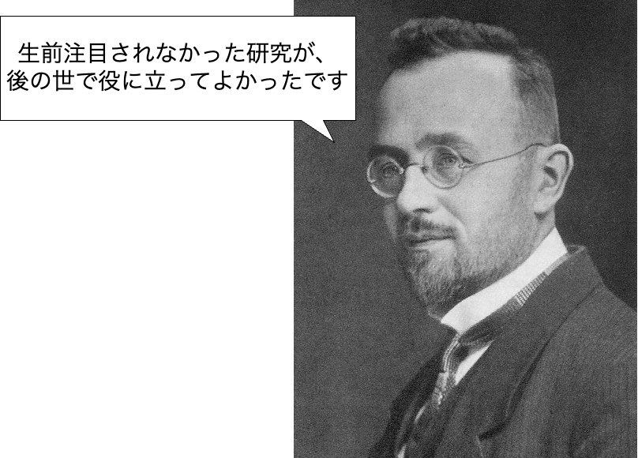

### CTスキャナの数理 #### ラドン変換と画像再構成 --- ### 自己紹介 <div class="profile-container"> <div class="profile-left"> * さめ(мег-сск) * 🧑💻 フリーランスのソフトウェアエンジニア * 🧑🎓 社会人学生として通信制大学在学中 * 得意分野: * 📸 コンピュータビジョン (画像認識/点群処理) * 🌍 空間情報処理 (地理情報/リモートセンシング) * ☁️ クラウドインフラ設計/IaC (AWS, GCP) * [GitHub](https://github.com/s-sasaki-earthsea-wizard) * [YouTube](https://www.youtube.com/@SyotaSasaki-EW) * [Speaker Deck](https://speakerdeck.com/syotasasaki593876) </div> <div class="profile-right"> <img src="assets/images/avatar.png" alt="avatar" height="350px" width="350px"> </div> </div> --- ## イントロダクション --- ### 今日話すこと <div class="simple-box"> * **X線で身体の断面をどのように見ているかを理解しましょう！** * CTスキャンの原理 * その背後にある**ラドン変換** </div> <br> <img src="assets/images/Moderní_výpočetní_tomografie_s_přímo_digitální_detekcí_rentgenového_záření.jpg" height="300px"> --- ### CTスキャンとは？ <div class="simple-box"> * 正式名称はコンピュータ断層撮影法 (Computed Tomography) * 物体の断面をX線を使って透視して3次元形状を再構成する技術 * **今日はその背後にある数理を見ていきましょう！** </div>  --- ## ラドン変換とは？ --- ### X線透過の原理 <div class="simple-box"> * X線は波長がとても短い光 * 人の体を透過するときには、X線の一部は吸収され、一部は透過する * X線が物体を透過するとき、強度は物体の物性や透過した長さによって減衰する </div>  --- ### ベール・ランベルトの吸収則 <div class="simple-box"> * ベール・ランベルトの吸収則は、X線の透過度と透過距離の関係を表す法則 * $I_0$ は入射X線の強度 * $I$ は透過したX線の強度 * $\mu$ は吸収係数 * $x$ は透過距離 </div> $$ I = I_0 e^{-\mu x} $$ --- ### CTスキャナーの基本原理 <div class="simple-box"> * 多方向からX線を照射し、透過強度を測定 * 各方向の透過データから物体内部の構造を再構成 * 問題：**透過データから物体の内部構造をどう求める？** </div> --- ### ラドン変換とは？ <div class="simple-box"> * 数学者ラドン (Johann Radon) が1917年に発表 * 平たく言うと、**平面の関数を直線の関数に変換する**数学的手法 * 平面の画像を3次元にするための道筋を作った！ </div>  --- ### ラドン変換の数式表現 <div class="two-columns"> <div class="column-left"> * 物体内のX線吸収係数の分布を$f(x,y)$と表す * 直線$\ell(t,\theta)$に沿ったX線の積分値： $$Rf(t,\theta) = \int_{-\infty}^{\infty} f(t\cos\theta - s\sin\theta, t\sin\theta + s\cos\theta)ds$$ * この積分変換がラドン変換 * 実際の測定データは$Rf(t,\theta)$に対応 </div> --- ### LT登壇者の募集 <div class="simple-box"> * 物理学集会ではLT登壇者を募集しています！ * どんなジャンルでもOK！ * 応募がないと主催がまたLTという名目のジャイアンリサイタルを開くことになります... * 興味のある方は物理学集会のDiscordサーバーまで！ </div> <img src="assets/images/qrcode.png" width="200px"> --- ### 告知 <div class="simple-box"> * 次回開催は5月31日を予定しています * YouTubeの物理の動画をみんなで見ようと思ってます * 「この動画をみんなで見たい！」という提案も大歓迎です！ </div> </div>